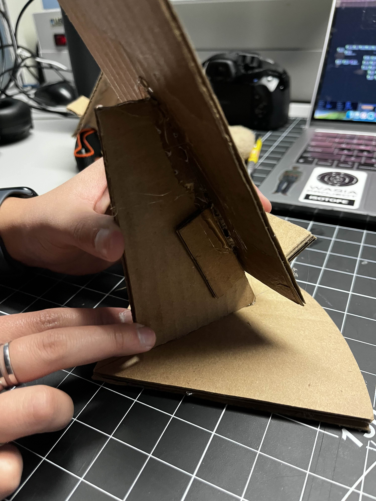
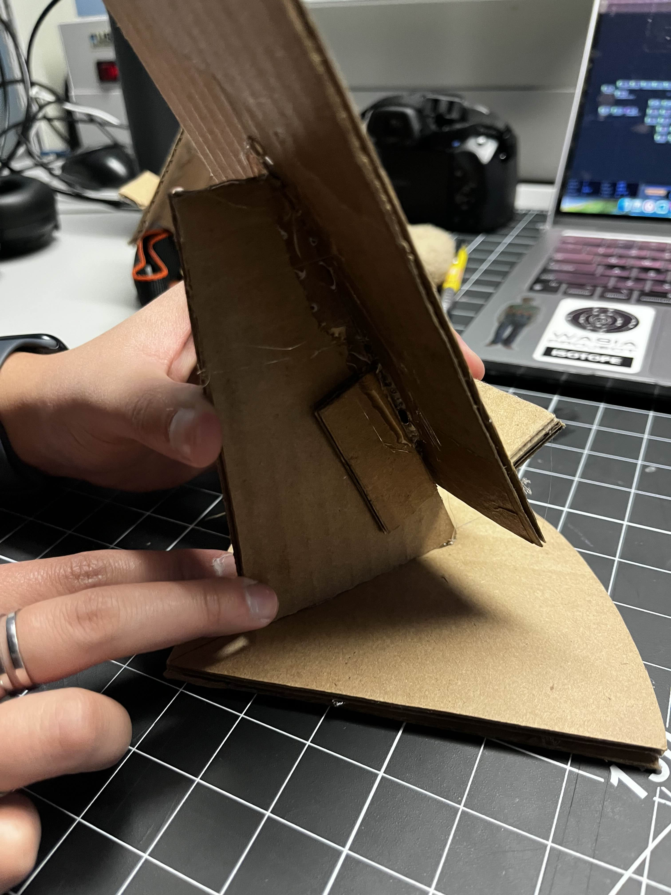
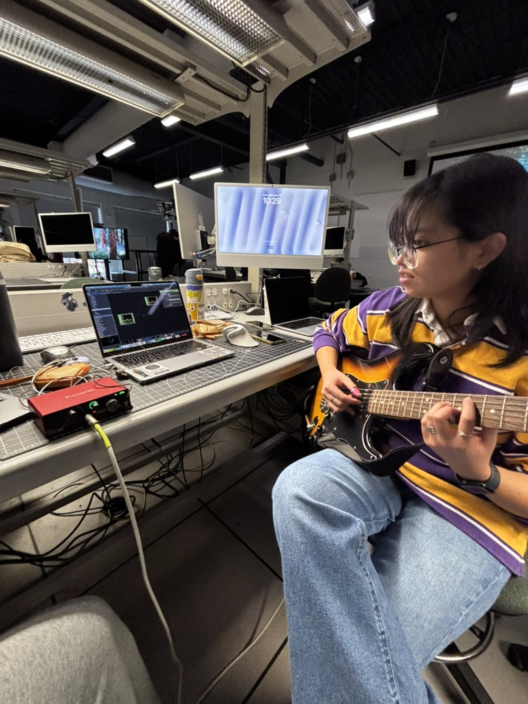
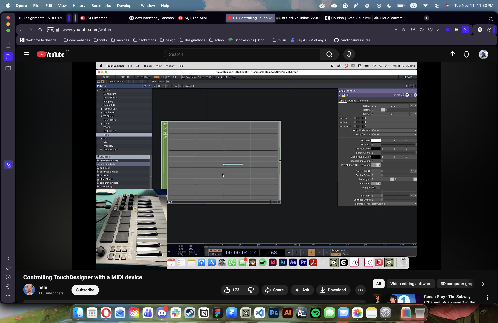
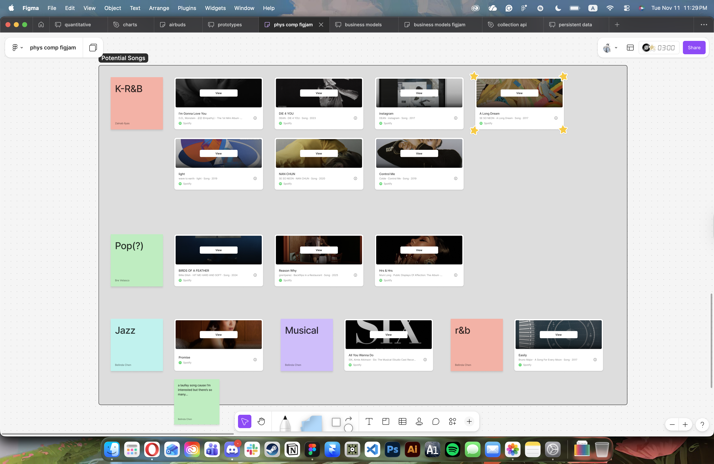
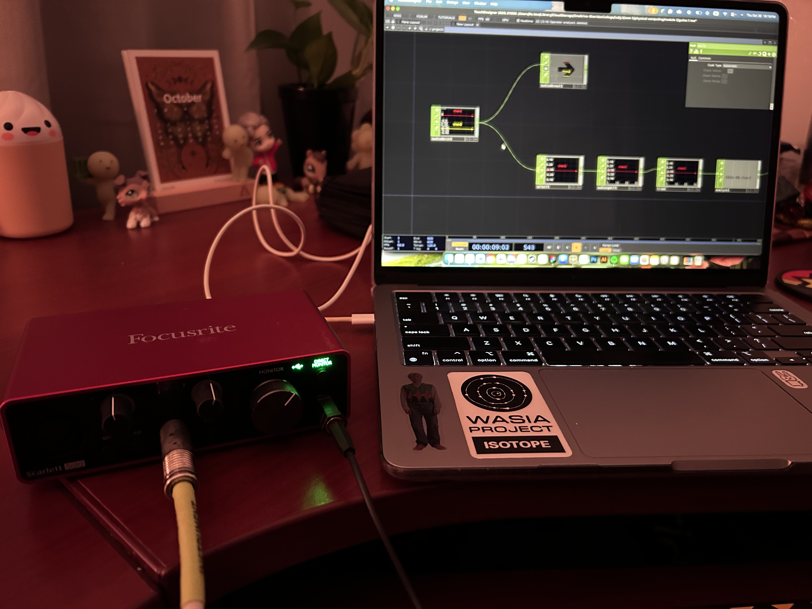
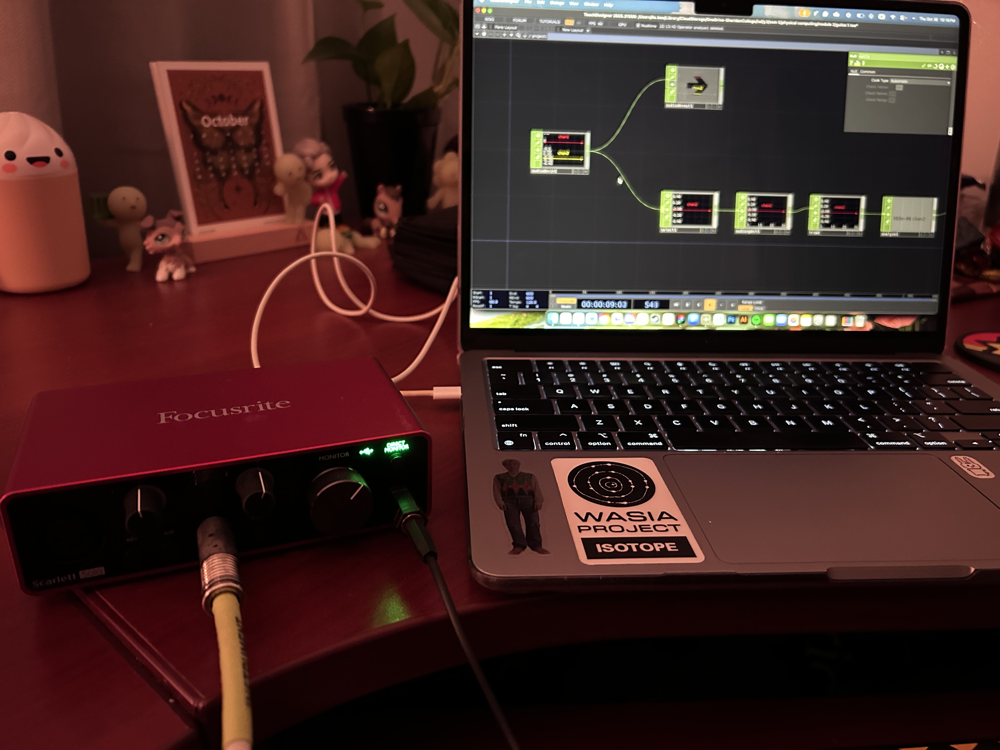
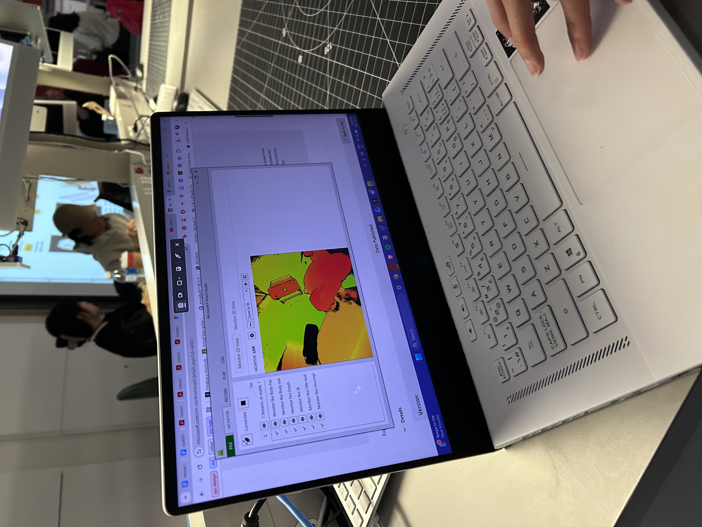

Designing Interactions: Visualizing Data with Prototypes
Module 2
Bre Velasco
Activities
Design statement
In this module, I worked together with my group mates Belinda Chen, Zainab Ilyas, and Mikhael Ledger on an enhanced live music performance setting that explores projection mapping, Kinect interactivity, and live audio-reactive visuals using TouchDesigner. Our concept acts as a more intimate dialogue between performer and audience by providing a visual way for attendees to interact with the music they listen to. My portion for this module explored audio-reactivity for the performers, and creating ways to visualize the music they play. Mikhael focused on audience interaction with the Kinect, and Belinda and Zainab focused on conceptual work for the narratives driving our art direction for the installation.
Phone Stand Geurilla Prototyping Workshop


 


Activity 1: Research




![I also looked for different kinds of live visuals that I could develop. I wanted fluid motion that could flow with the song that we chose, as well as provide a base for our Kinect interaction. I was particularly interested in this tutorial (icele /, 2023), and their approach on audio analysis. While playing around with visuals, my software updated to now include Point Operators (POPs), which offers faster 3D data performance on GPU. For the purposes of this module, I hope to explore this with the final interactive design in the next module.](images/Activity1/audio.png)
Activity 2: Exploration
![I went back to my most recent personal project involving audio-reactive visuals to revisit audio analysis techniques I learned from previous tutorials (Factory Settings, 2023). The particular one I followed (The Interactive & Immersive HQ, 2023) for my Sanctuary visualizer dives into using Chladni cymatics. I used particle physics, so I could use some parts of the node system towards the final design. <a href='https://youtube.com/shorts/8mhIRIldUng?feature=share' target='_blank'><p>Sanctuary cymatic visualizer</p></a>](images/Activity2/joji.png)
 



Additional Research



Final proposed prototype
insert prototype name here
Our proposed prototype is a live demo of one possible projector truss set up in the marquee. The live visuals are generated from input from my MIDI keyboard controller and displayed on the scaled down model of the Marquee space in the SSU on Trafalgar. At this stage, we haven’t yet integrated the Kinect for audience interactivity into our node systems, which is something that we will test in following this project. Limitations with my mini projector also meant that I could not use it as a separate display in Kantan Mapper, but the demo provided a solid proof-of-concept of what we hope to achieve in the final module.

Powered by w3.css